# Libraries needed
library(tidyverse)
library(tsibble)
library(lubridate)
library(fable)
library(feasts)
library(fuzzyjoin)
library(bigrquery)
library(glue)
library(GGally)
library(scales)
bq_auth()
## Replace with your Google Cloud `project ID`
project_id <- 'your.google.project.id'Forecasting Series: Exploratory analysis of Google Analytics 4 data for forecasting models
forecasting
Introduction
Managing an e-commerce websites requires some ability to predict and plan for the future. Some questions a site owner might want to predict include: What content/products will users view the most this coming period (i.e., daily, weekly, etc.)? To what effect will time of year have on the content/products users view (e.g., holiday shopping)? What and how much of each product needs to be in stock to meet users’ demands? Most importantly, what types of content/product views result in more completed orders?
A crystal ball to consult would be ideal. Unfortunately, one has not been developed, yet. And the future isn’t looking bright for such an innovation. So then, what other tools are available to assist in the planning and goal setting surrounding the development and management of an e-commerce website?
Educated guesses are a start (i.e., hypotheses). These hypotheses could be based on some domain knowledge, further supported with historical data. Some common guesses might be: This year will be similar to last year. This quarter’s sales will be similar to last quarters. Site views will increase this quarter. XYZ will see a decrease in sales. Although domain knowledge and past experiences can be used to inform our hypotheses, other tools can be used to generate evidence to support our hypotheses. One such tool is forecasting. A forecast is a tool to help reduce uncertainty; the process and methods used to predict the future as accurately as possible, given all the information available (Hyndman and Athanasopoulos 2021).
The purpose of this blog series
This series of blogposts will focus on creating forecasts using Google Analytics 4 data. Specifically, this series overviews the steps and methods involved when developing forecasts of time series data. This blog series begins with a post overviewing the wrangling, visualization, and exploratory analysis involved when working with time series data. The primary focus of the exploratory analysis will be to identify interesting trends for further analysis and application within forecasting models. Then, subsequent posts will focus on developing different forecasting models. The primary goal of this series is to generate a forecast of online order completions on the Google Merchandise store.
A quick disclaimer
Another intention of this series is to document and organize my learning and practice of time series analysis. Although I try my best to perform and report valid and accurate analysis, I will most likely get something wrong at some point in this series. I’m not an expert in this area. However, it’s my hope that this series can be a supplement to others who may be learning and practicing time series analysis. In fact, seeing somebody (i.e., myself) do something wrong might be a valuable learning experience for someone else, even if that someone is my future self. If I got something wrong, I would greatly appreciate the feedback and will make the necessary changes.
Throughout the series, I will document the resources I used to learn the process involved when generating forecasting models. I highly suggest using these as the primary source to learn this subject, especially if you intend to use this type of analysis in your own work. Specifically, the process and methods detailed in this series are mostly inspired by the Forecasting: Principles and Practice online textbook by Rob J Hyndman and George Athanasopoulos, and it utilizes several packages to wrangle, visualize, and forecast time series data (e.g., tsibble; fable; and feasts). I am very thankful to the authors and contributors for making these materials open-source.
The purpose of this post
This specific post provides an example of exporting Google Analytics 4 data from BigQuery and importing it into R, a statistical programming language. Then, it focuses on documenting the wrangling, visualization, and exploratory analysis steps involved when working with time series data. Lastly, the exploratory analysis is used to narrow the analysis’ scope, where specific series will be identified as potential candidates to be included in a model forecasting order completion page views on the Google Merchandise store. To help summarize the exploratory analysis steps performed here, I have created the following flow chart:
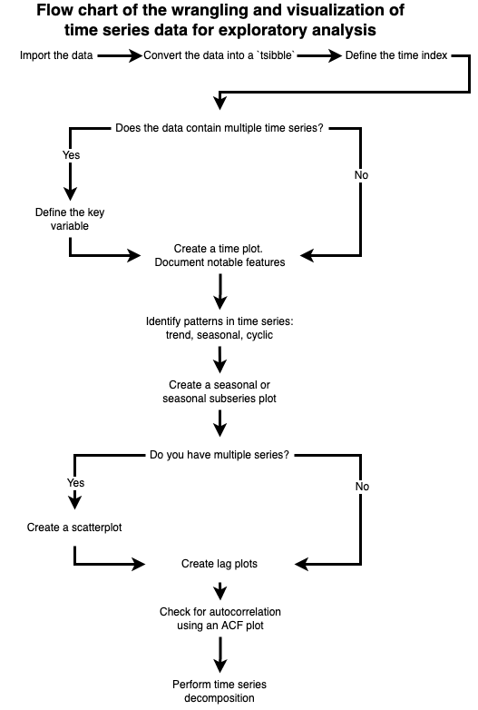
The exploratory analysis of time series data involves the use of various steps, methods, and visualizations. To keep things simple and organized, though, the above steps were followed. Your data may necessitate you take additional or different steps to reach a sufficient understanding of your data.
Setup
The following is the setup steps needed to perform this exploratory analysis.
## Configure the plot theme
theme_set(
theme_minimal() +
theme(
plot.title = element_text(size = 14, face = "bold"),
plot.subtitle = element_text(size = 12),
panel.grid.minor = element_blank()
)
)The data
As was used in previous posts, Google Analytics 4 data for the Google Merchandise Store are used for the examples below. Data represents website usage from 2020-11-01 to 2021-12-31. Google’s Public Datasets initiative makes this data open and available for anyone to use (as long as you have a Google account and have access to Google Cloud resources). Data are stored in Google BigQuery, a data analytics warehouse solution, and are exported using a SQL like syntax. Details on how this data were exported can be found in this GitHub repository. More about the data can be found here.
Export the data
The first step in the process was to export all page_view events. To do this, the following SQL code was submitted to BigQuery using the bigrquery package. Keep in mind Google charges for data processing performed by BigQuery. Each Google account–at least since the writing of this post–had a free tier of usage. If you’re following along and you don’t have any current Google Cloud projects attached to your billing account, this query should be well within the free usage quota. However, terms of service may change at anytime, so this might not always be the case. Nevertheless, it is best to keep informed about the data processing pricing rates before submitting any query to BigQuery.
select
event_date,
user_pseudo_id,
event_name,
key,
value.string_value
from `bigquery-public-data.ga4_obfuscated_sample_ecommerce.events_*`
CROSS JOIN UNNEST(event_params)
where
event_name = 'page_view' and
_TABLE_SUFFIX between '20201101' and '20211231' and
key = 'page_location'The query returns a data set with 1,350,428 rows and the following columns:
event_date- represents the date the website event took place.user_pseudo_id- represents a unique User ID.event_name- The name of the event specified by Google Analytics. In our case this will just bepage_viewgiven the filtering criteria.key- represents thepage_locationdimension from the data. This column should only containpage_location.string_value- represents the page to which the event took place. In other words, the page path apage_viewevent was counted.
This query returns a lot of data. Thus, the analysis’ scope needed to be narrowed to make the exploratory analysis more manageable. To do this, top-level pages were identified and data wrangling procedures were performed to reduce the data down to pages relevant to the exploratory analysis.
Narrowing the analysis’ scope to relevant pages
The overall aim of the series is to forecast Order Completed page views. As part of this, relevant pages that could be used to improve forecasting models needed to be a part of the exploratory analysis. However, this is challenging given the sheer amount of pages being represented within the data. Some pages relevant to the analysis, others, not so much. Given the number of possible pages, a decision was made to only examine key, top-level pages. The question is, then, what pages should be considered relevant to the analysis?
Determining top-level pages
The navigation bar of the Google Merchandise Store was used to determine the top-level pages. Indeed, it’s reasonable to expect the navigation bar is designed to drive users to key areas of the site. Developers won’t waste valuable navbar real-estate for content users would consider useless and/or irrelevant (i.e., these are developers at Google, so they mostly likely have a good idea of how users use a website). With this in mind, the following pages were identified as potential candidates for further analysis.
- New products
- Apparel
- Lifestyle
- Stationery
- Collections
- Shop by Brand
- Sale (i.e., Clearance)
- Campus Collection
The checkout flow is another key component of any e-commerce website. Indeed, a main goal of the site is to convert visits into order completions. As such, pages related to the checkout flow might be another area of interest in the analysis. It’s challenging to piece together the checkout flow by just looking at the data. So, I purchased a few products to observe the checkout flow and track the different pages that came up. The checkout flow–at least when I made my purchase–went in this specific order:
- Review basket
- Sign in (I wasn’t signed into my Google account)
- Review my information
- Payment info
- Order review
- Order completed
Although these pages were identified as potential candidates for further analysis, it’s important to recognize the Google Merchandise store is not static, and thus the design and layout may have changed from the dates the data represents vs. when I went through the checkout flow. Regardless, these initial observations provided a starting point to help narrow the analysis’ focus.
Filtering out homepage events
Now that the analysis’ scope had been narrowed to top-level pages, events associated with homepage views were filtered out to reduce the number of events within the data. To do this, the regex_filter variable was created using the glue() function from the glue package, which was then applied within a filter statement.
regex_page_filter <- glue(
"(",
"^https://www.googlemerchandisestore.com/$|",
"^https://googlemerchandisestore.com/$|",
"^https://shop.googlemerchandisestore.com/$",
")"
)The variable contained multiple regex expressions, as several page paths in the data represented home page visits. Defining the variable in this way ensured the filter excluded all data associated with homepage visits.
Once the filter statement was set up, the str_to_lower() function from the stringr package was used to convert all the page paths to lower case. The following code chunk demonstrates how these operations were performed.
ga4_pagepaths <- ga4_pageviews %>%
filter(!str_detect(string_value, regex_page_filter)) %>%
mutate(string_value = str_to_lower(string_value))The filtering resulted in a reduced data set (i.e., ~1 million rows). Since the intent was to further narrow the analysis’ scope, additional filtering was performed. Specifically, the data were filtered to return a data set containing the top-level pages identified previously.
Another variable–similar to regex_filter–was created and used to filter the data further. Given the number of pages, though, a filtering join would be more appropriate (e.g., semi-join). The problem is the join operation needed to filter the data needed to be based on several regular expressions.
A semi-join using a regular expression is not supported with dplyr’s joins, so the regex_semi_join() function from David Robinson’s {fuzzyjoin} package was used. This package provides a set of join operations based on inexact matching. A separate data set (tracked_data), containing the regular expressions was then created, imported into the session, and used within the join operation. A dplyr::left_join() was then used to include this data within a tidy dataset. The following chunk provides example code to perform these operations.
tracked_pages <- read_csv("tracked_pages.csv")
top_pages_data <- ga4_pagepaths %>%
mutate(
string_value = str_remove(
string_value,'https://shop.googlemerchandisestore.com/')) %>%
regex_semi_join(tracked_pages, by = c("string_value" = "page_path")) %>%
regex_left_join(tracked_pages, by = c("string_value" = "page_path"))At this point, the data is more manageable and easier to work with. At the start, the initial export contained around 1.6 million rows. By narrowing the focus of the analysis and performing several data wrangling steps to filter the data, the final tidy data set contained around 320,000 rows.
Given the limited amount of storage available and how this post is hosted makes authentication into BigQuery challenging, I opted to not integrate the extraction steps into the rendering steps and to exclude the full data with this post. However, I included the filtered data set in a .rds file to conserve space. I imported this file by running the following code chunk to continue the exploratory analysis. I would skip this step and just directly export the data from BigQuery if this analysis was performed outside the forum of a blog post.
top_pages_data <- readRDS("top_pages_data.rds")Data exploration
With data in a tidy format, the exploratory analysis and further identification of relevant series for forecasts of Order Completed page views can take place. One area of possible exploration is to identify which pages generate a significant amount of traffic. Indeed, it’s possible that pages with a lot of traffic might also result in more order completions: more traffic indicates more interest; more interest could mean more orders.
A few questions to answer:
Which top-level pages have the most unique users?
What pages get the most traffic (i.e., page views)?
A simple bar plot is created to answer these questions. Here’s the code to create these plots, using the ggplot2 package.
page_summary <- top_pages_data %>%
group_by(page) %>%
summarise(
unique_users = n_distinct(user_pseudo_id),
views = n()
) %>%
arrange(desc(unique_users))ggplot(page_summary, aes(x = unique_users, y = reorder(page, unique_users))) +
geom_col() +
scale_x_continuous(labels = scales::comma) +
labs(title = "Top-level pages by users",
subtitle = "Apparel page viewed by a significant amount of users",
y = "",
x = "Users",
caption = "Source: Google Merchandise Store GA4 data exported from BigQuery"
)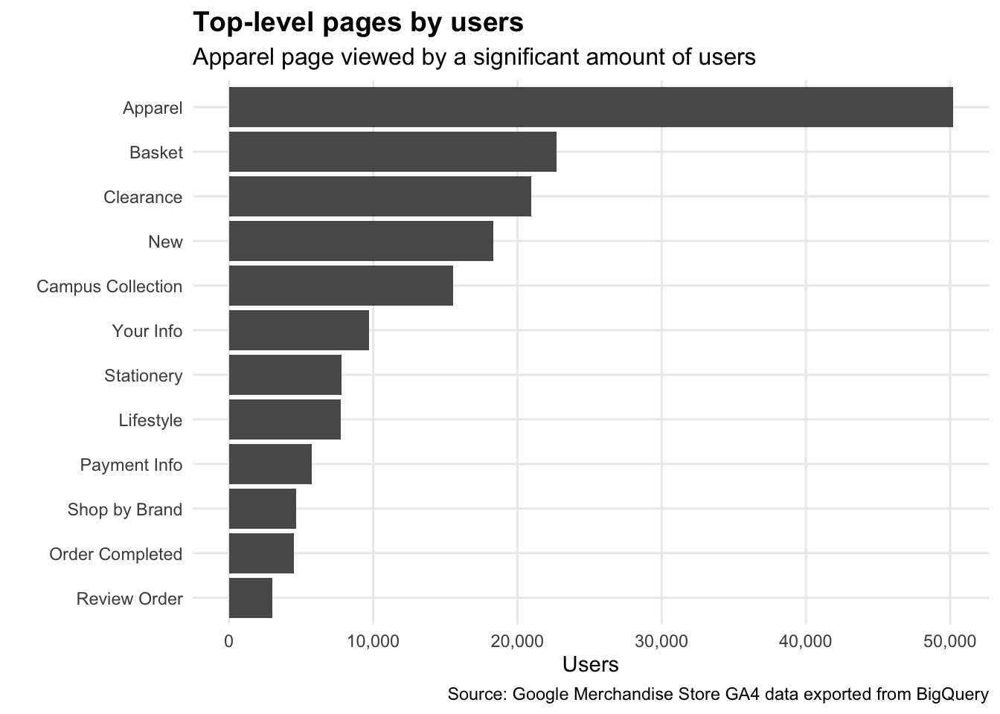
ggplot(page_summary, aes(x = views, y = reorder(page, views))) +
geom_col() +
scale_x_continuous(labels = scales::comma) +
labs(title = "Top-level pages by views",
subtitle = "Apparel and basket pages generate significant amount of views",
y = "",
x = "Views",
caption = "Source: Google Merchandise Store GA4 data exported from BigQuery"
) 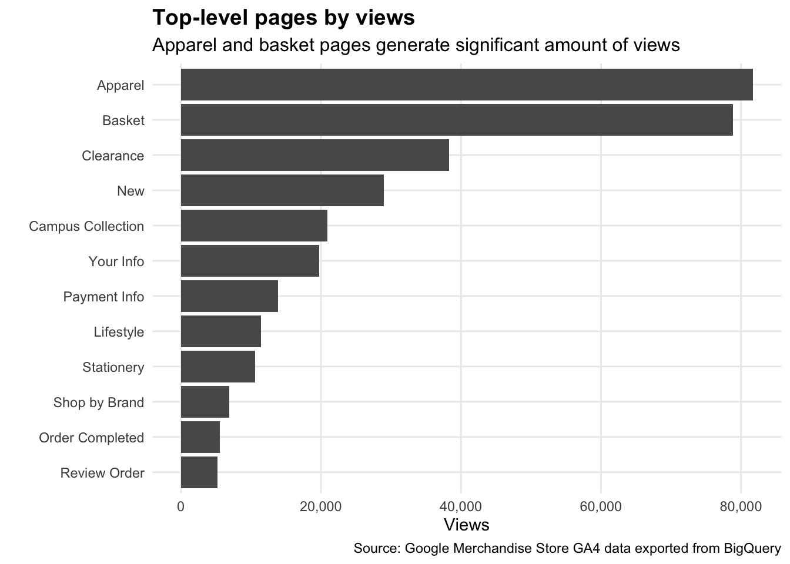
Apparel clearly seems to not only have received a significant amount of users, but a high number of page views as well. It’s also interesting to note that the basket had nearly half the amount of users compared to apparel, but the amount of page views was similar. It’s also apparent, at least with the data available, that more users browsed clearance then they did new items during this period. Just looking at the current summary for the period, apparel might be a potential time series to include within forecasting models of order completions.
Although the apparel page is a likely candidate for the forecasting models, supplemental data should be examined to justify its inclusion. For instance, actual purchase/financial data could provide further justification of the business case and value of focusing on this specific area within future analyses. For instance, apparel may drive a lot of traffic, but it may not be an area where much revenue or profit is generated. Thus, the focus on more money generating/profitable products may be better candidates to improve the accuracy of our forecasting models. Despite this, actual purchase and financial data are not available. As a result, this is not explored further.
Create time series data visualizations
Visualizing the time series is the next step in the exploratory analysis. This step will be further helpful in identifying potential time series that may be of value in creating a forecast of Order Completed page views.
Convert the tibble into a tsibble
The top_pages_data tibble is now converted to an object that contains temporal structure. To do this, the as_tsibble() function from the {tsibble} package is used. This package provides a set of tools to create and wrangle tidy temporal data. Before the temporal structure could be mapped to the data set, a few wrangling steps were performed: 1). the event_date column was converted into a date variable; and 2). data were aggregated to count the number of unique_users and views. The following code chunk contains an example of these steps.
pages_of_interest <- c("Apparel",
"Campus Collection",
"Clearance",
"Lifestyle",
"New",
"Order Completed",
"Shop by Brand")
tidy_trend_data <- top_pages_data %>%
mutate(event_date = parse_date(event_date, "%Y%m%d")) %>%
group_by(event_date, page) %>%
summarise(
unique_users = n_distinct(user_pseudo_id),
views = n(),
.groups = "drop"
) %>%
as_tsibble(index = event_date, key = c("page")) %>%
filter(page %in% pages_of_interest)At this point, several trend plots could be created using the ggplot2 package. However, the feasts package provides a convenient wrapper function to quickly make trend visualizations of tsibble objects, autoplot(). The outputted plot was then formatted to improve readability.
autoplot(tidy_trend_data, views, size = 1, alpha = .8) +
scale_y_continuous(labels = comma) +
labs(y = "Views",
x = "",
title = "Time plot of page views",
subtitle = "Apparel drove a significant amount of views",
caption = "Source: Google Merchandise Store GA4 data exported from BigQuery"
) +
theme(legend.title = element_blank())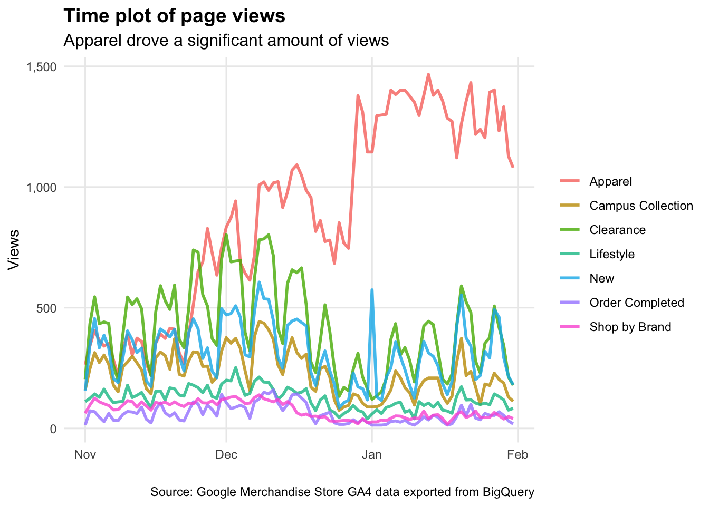
ggplot2’s facet_wrap() function was used to create a plot for each series. Splitting the plots into separate entities allowed for a clearer view of the characteristics within each series.
autoplot(tidy_trend_data, views, size = 1, alpha = .8) +
scale_y_continuous(labels = comma) +
facet_wrap(.~page, scales = "free_y") +
labs(y = "Views",
x = "",
title = "Time plots of page views",
subtitle = "Various characteristics are present within each series",
caption = "Source: Google Merchandise Store GA4 data exported from BigQuery"
) +
theme(legend.position = "none")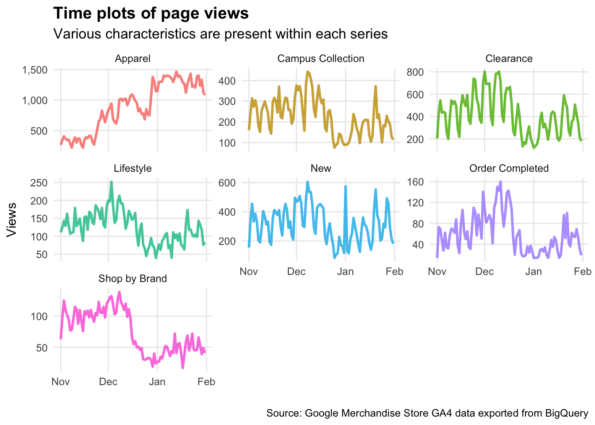
Identify notable features using time plots
Apparel again emerges as a potential series to include within the forecasting models, as this page generates a significant amount of traffic. Despite the sheer amount of traffic to the apparel page, though, other time series peak interest. Specifically, the Campus Collection, Clearance, Lifestyle, and New pages all have some interesting characteristics that could be used to improve forecasting models. The following plots contain the isolated trends. A description of the characteristics within each trend is provided.
Apparel page’s characteristics
tidy_trend_data %>%
filter(page == "Apparel") %>%
autoplot(views, size = 1, alpha = .8) +
scale_y_continuous(labels = comma) +
labs(y = "Views",
x = "",
title = "Time plot of Apparel page views",
subtitle = "Series exhibits positive trend; slight cyclic patterns; no seasonal patterns present",
caption = "Source: Google Merchandise Store GA4 data exported from BigQuery"
) 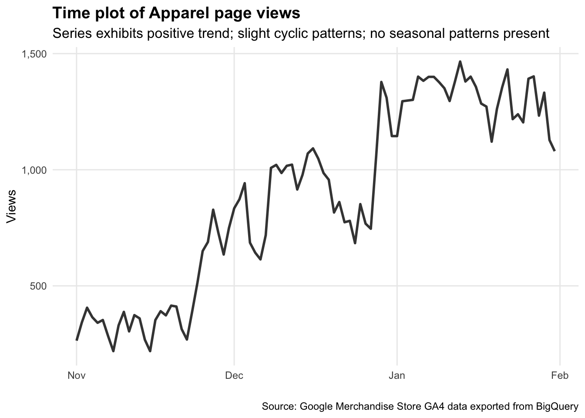
- A clear positive trend.
- The series contains some cyclic elements and very little indication of a seasonal pattern. However, with a greater amount of points, a seasonal pattern might be revealed (e.g., holiday season shopping).
Campus Collection page’s notable characteristics
tidy_trend_data %>%
filter(page == "Campus Collection") %>%
autoplot(views, size = 1, alpha = .8) +
scale_y_continuous(labels = comma) +
labs(y = "Views",
x = "",
title = "Time plot of Campus Collection page views",
subtitle = "Cyclic behavior present within the series",
caption = "Source: Google Merchandise Store GA4 data exported from BigQuery"
) 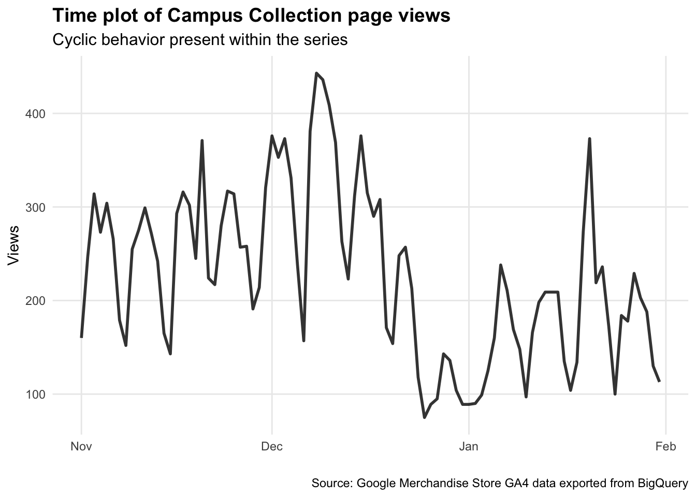
- A slight positive trend is present up until the middle of the series. Towards the middle of the series, no real trend is present.
- Given the variation is not of a fixed frequency, this series exhibits some cyclical behavior.
Clearance page’s notable characteristics
tidy_trend_data %>%
filter(page == "Clearance") %>%
autoplot(views, size = 1, alpha = .8) +
scale_y_continuous(labels = comma) +
labs(y = "Views",
x = "",
title = "Time plot of Clearance page views",
subtitle = "Slight trend components are present; weekly seasonality is also present",
caption = "Source: Google Merchandise Store GA4 data exported from BigQuery"
) 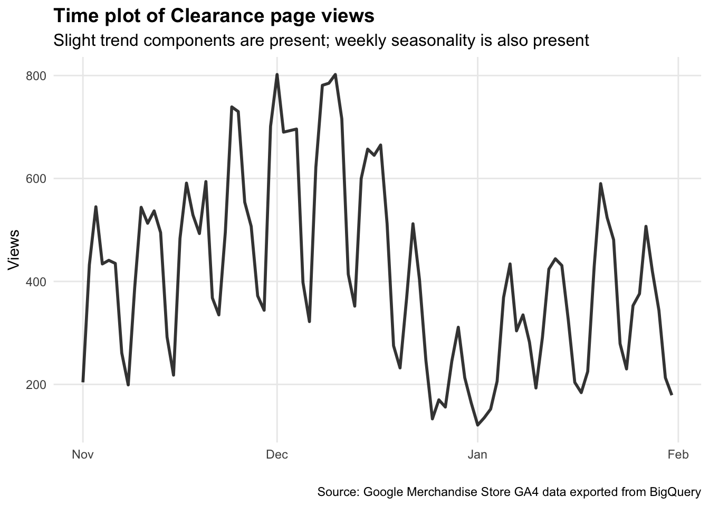
- A slight upward trend towards the middle of the series, followed by a steep downward trend, and then a slight upward trend towards the end of the series is present.
- The series also has a clear seasonal pattern, which seems to be weekly in nature. Perhaps products are moved to clearance on a weekly basis.
Lifestyle page’s notable characteristics
tidy_trend_data %>%
filter(page == "Lifestyle") %>%
autoplot(views, size = 1, alpha = .8) +
scale_y_continuous(labels = comma) +
labs(y = "Views",
x = "",
title = "Time plot of Lifestyle page views",
subtitle = "Trend not clear in this series; some strong cyclic behavior",
caption = "Source: Google Merchandise Store GA4 data exported from BigQuery"
) 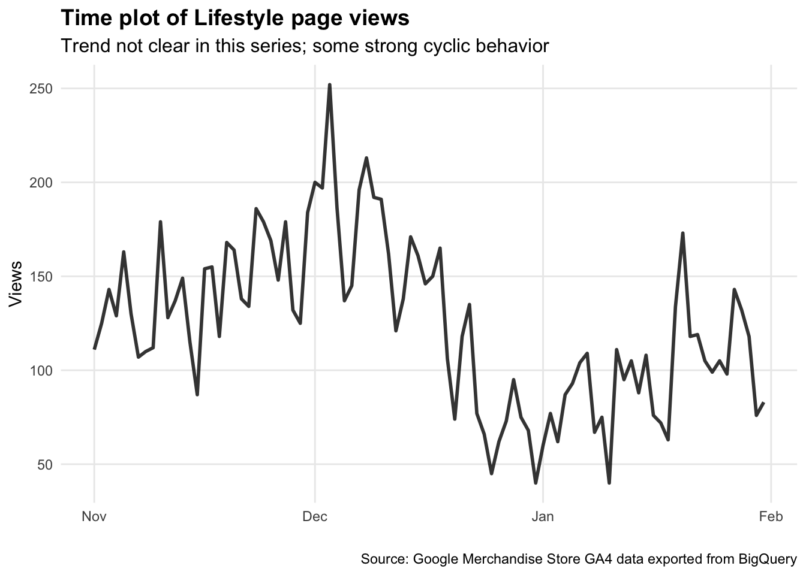
- Trend is not clear in this series.
- There is some strong cyclic behavior being exhibited with limited seasonality with the time frame available.
New page’s notable characteristics
tidy_trend_data %>%
filter(page == "New") %>%
autoplot(views, size = 1, alpha = .8) +
scale_y_continuous(labels = comma) +
labs(y = "Views",
x = "",
title = "Time plot of New page views",
subtitle = "No trend present; some some strong cyclic behavior",
caption = "Source: Google Merchandise Store GA4 data exported from BigQuery"
) 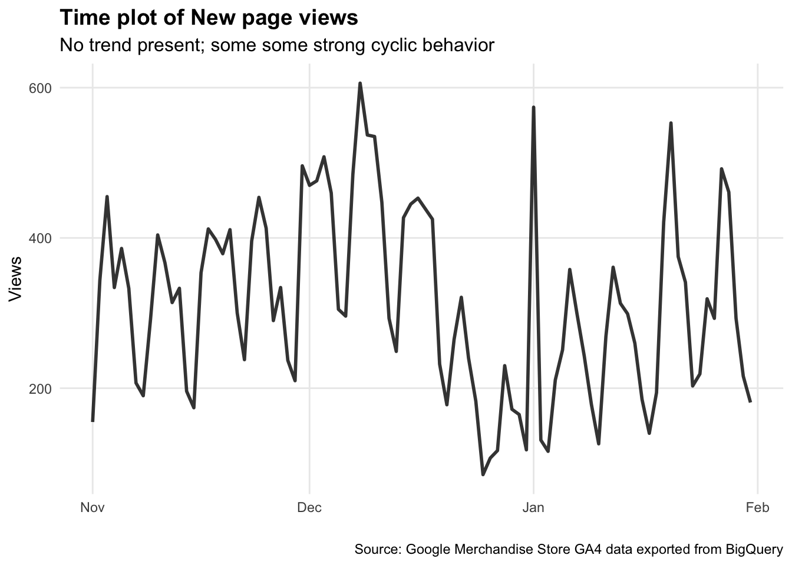
- No real trend is present.
- Strong cyclic behavior is present within the series. Some seasonality is present. Indeed, this is similar to the Clearance series, as the seasonality seems to be weekly. Perhaps new products are released each week.
Shop by brand characteristics
tidy_trend_data %>%
filter(page == "Shop by Brand") %>%
autoplot(views, size = 1, alpha = .8) +
scale_y_continuous(labels = comma) +
labs(y = "Views",
x = "",
title = "Time plot of Shop by Brand page views",
subtitle = "Some trend components; slight cyclic behavior",
caption = "Source: Google Merchandise Store GA4 data exported from BigQuery"
) 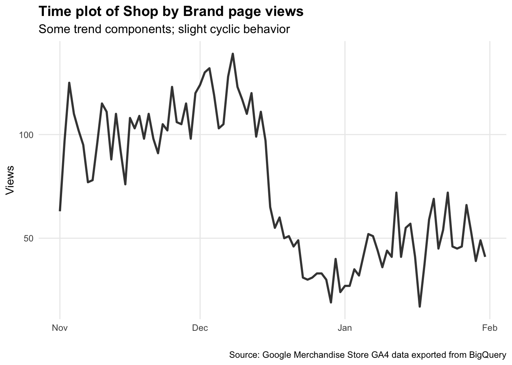
- The trend here seems to be positive from the start, then declines sharply, and then exhibits a slight positive trend towards the end of the series.
- There also seems to be some slight cyclicity with very little seasonality.
Order completed characteristics
tidy_trend_data %>%
filter(page == "Order Completed") %>%
autoplot(views, size = 1, alpha = .8) +
scale_y_continuous(labels = comma) +
labs(y = "Views",
x = "",
title = "Time plot of Order Completed page views",
subtitle = "Some trend components; slight cyclic behavior",
caption = "Source: Google Merchandise Store GA4 data exported from BigQuery"
) 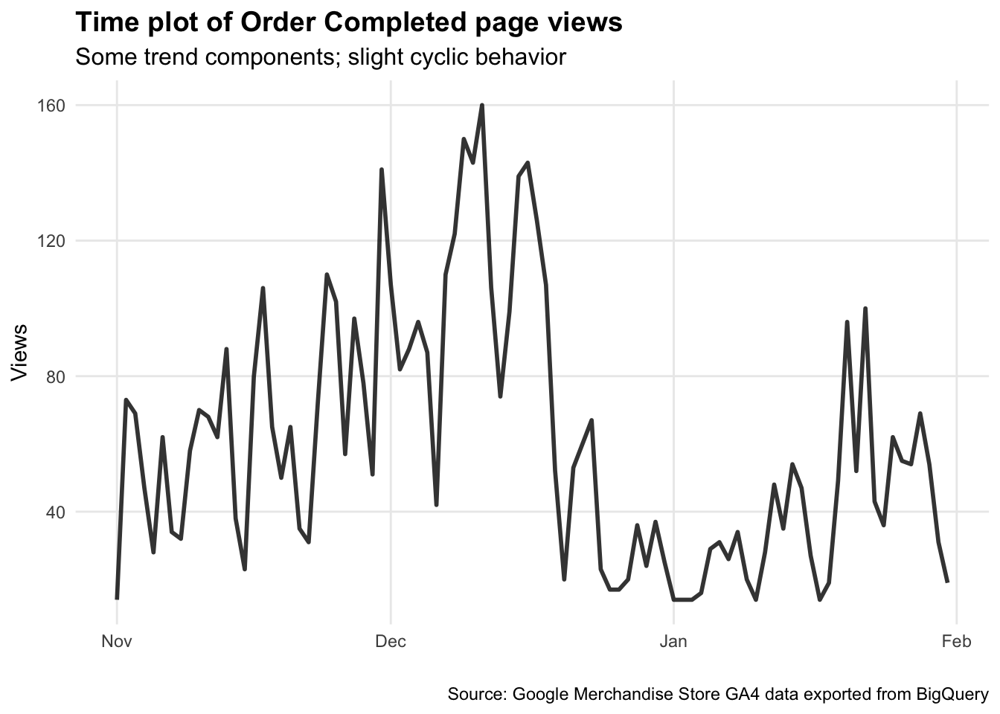
- The trend from the start seems to be positive, up until the middle of the series. From there, a steep decline is present. Towards the end of the series, there is a subtle positive trend.
- Towards the beginning of the series, there seems to be some strong cyclicity. Towards the end of the series, there seems to be more of a seasonal pattern within the data. This cyclicity may be due to the time of year which this data represents, the holiday season.
Since this analysis is focused on creating a forecast for order completions, additional work needed to be done to identify potential series that may improve the forecasts. To do this, several scatter plots were created to help identify variables that relate to order completions.
Before additional exploratory plots can be created, though, additional data wrangling steps needed to be taken. Specifically, the data was transformed from a long format to a wide format, where the page variable is turned into several numeric columns within the transformed data set. The following code chunk was used to perform this task.
tidy_trend_wide <- tidy_trend_data %>%
select(-unique_users) %>%
mutate(page = str_replace(str_to_lower(page), " ", "_")) %>%
pivot_wider(names_from = page,
values_from = views,
names_glue = "{page}_views")With data in a wide format, the ggpairs() function from the GGally package was used to create a matrix of scatterplots and correlation estimates for the various series within the dataset.
Here is the code to perform this analysis and output the matrix of plots.
tidy_trend_wide %>%
ggpairs(columns = 2:8)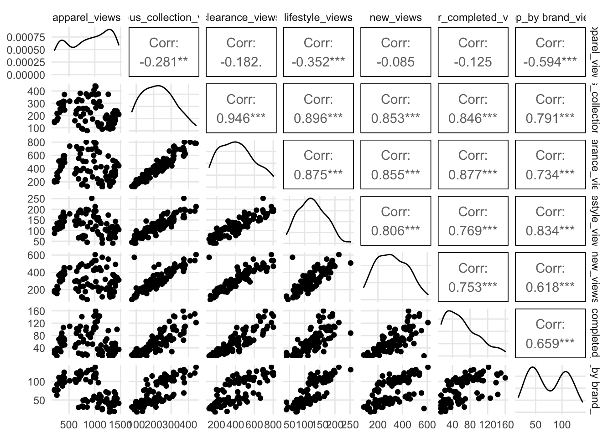
The scatterplots and correlations output revealed some interesting relationships. For one, although previous exploratory analysis revealed apparel generated high volumes of views, the correlation analysis revealed a slight negative relationship with order completions. However, five variables seem to be highly correlated with order completions: Clearance (.877), Campus Collection (.846), Lifestyle (.769), New (.753), and Shop by Brand (.659). Evidence points to these series as being potentially valuable components of a forecasting model of Order Completed page views.
Narrow the focus further
At this point, this post transitions into examining just the Order Completed page views, as this is the time series intended to be forecasted within future analyses done in this series of blog posts.
Lag plots
It’s time to shift focus onto exploring the characteristics of the outcome variable of future forecasting models, order completions, in more depth. The next step, then, is to examine for any lagged relationships present within the Order Completed page views time series.
The gg_lag function from the feats package makes it easy to produce the lag plots. Here the tidy_trend_wide data will be used.
tidy_trend_wide %>%
gg_lag(order_completed_views, geom = "point")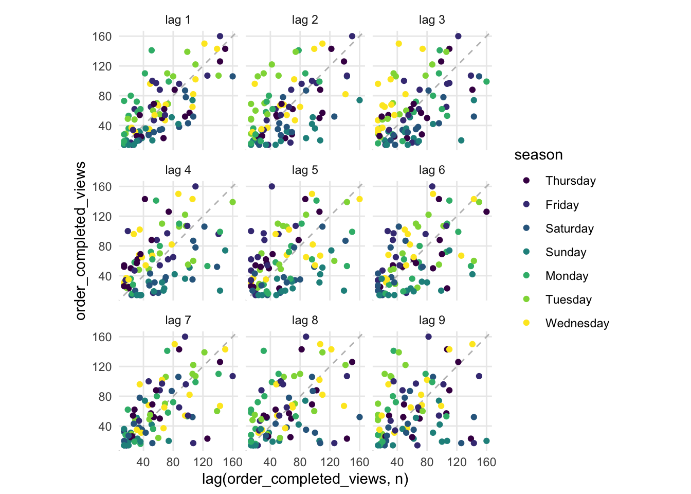
The plots provide little evidence that any lagged relationships–positive or negative–are present within this time series. Thus, no further steps were taken to account for lagged relationships at this point in the analysis.
Autocorrelation
Exploring for autocorrelation is the next step. A correlogram is created to explore for this characteristic within the series. A correlogram “measures the linear relationship between lagged values of a time series” (Hyndman and Athanasopoulos 2021). The ACF is first calculated for each value within the series. This value is then plotted according to it’s corresponding lag values. The ACF() function from the feasts package was used to calculate these values. The resulting data object is then passed along to the autoplot() function, which creates the correlogram for the data. Here is what the code looks like, along with the outputted plot.
tidy_trend_wide %>%
ACF(order_completed_views, lag_max = 28) %>%
autoplot()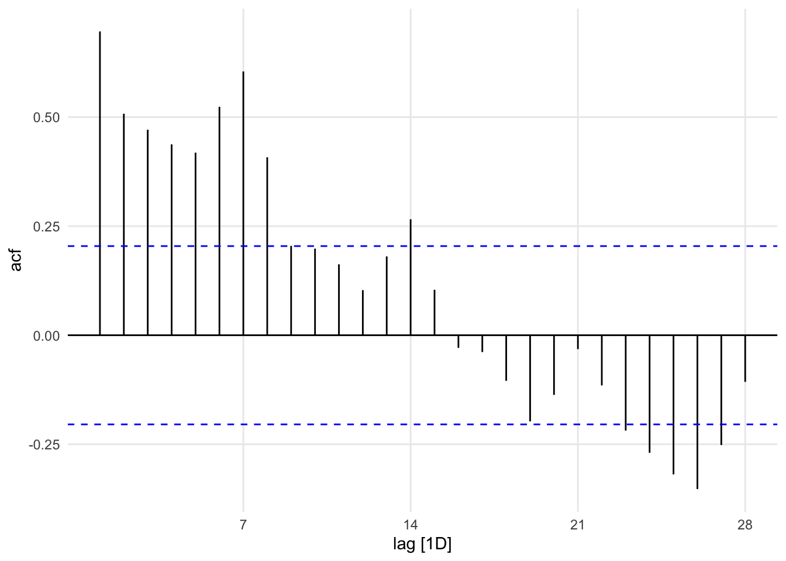
Inspect the correlogram
The correlogram clearly shows the data is not a white noise series. Moreover, the plot reveals several structural characteristics within the time series.
The correlogram, given the smaller lags are large, positive, and seem to decrease with each subsequent lag, which suggests the series contains some type of trend.
The plot also reveals a slight scalloped shape (i.e., peaks and valleys at specific intervals), which suggests some seasonality occurring within the process. Indeed, it seems peaks occur every seven days (e.g., lags 7 and 14). Thus, a slight weekly seasonality may be present within the time series.
Given these structural characteristics of the series, future forecasting steps will need to account for these issues. This topic will be further discussed in future posts.
Trend Decomposition
The final exploratory analysis step is to split the series into its several components. This includes the seasonal, trend, and remainder components. Here an additive decomposition is performed. Transformations were not applied to this data before decomposition was performed.
An argument could be made to transform this time series using some mathematical operation. Indeed, transforming the series may improve forecasts generated from the data (Hyndman and Athanasopoulos 2021). However, this analysis doesn’t have access to a complete series of data. Having more data could lead to more informed decisions on the appropriate application of transformations. A full year or multiple years worth of data would be preferred. Interpretability is also a concern, as transformations would need to be converted back to the original scale once the forecast was created. Thus, it was decided that transformations were not going to be applied to the data. More about transforming the series can be referenced here.
The series was broken down into its multiple components: seasonal, trend-cycle, and remainder (Hyndman and Athanasopoulos 2021). Decomposing the series allows for more to be learned about the underlying structure of the time series. As a result, allowing for structural components of the time series that could improve forecasting models to be identified. Several functions from the {feasts} and {fabletools} packages simplified the decomposition process.
First, the trend components are calculated using the STL() and model() functions. STL() decomposes the trend. The model() function creates a mabel object of estimates. The components() function is then used to view the model object.
order_views_dcmp <- tidy_trend_wide %>%
model(stl = STL(order_completed_views))
components(order_views_dcmp)# A dable: 92 x 7 [1D]
# Key: .model [1]
# : order_completed_views = trend + season_week + remainder
.model event_date order_completed_views trend season_week remainder season_…¹
<chr> <date> <int> <dbl> <dbl> <dbl> <dbl>
1 stl 2020-11-01 14 47.8 -37.6 3.80 51.6
2 stl 2020-11-02 73 47.9 12.9 12.2 60.1
3 stl 2020-11-03 69 47.9 23.1 -1.99 45.9
4 stl 2020-11-04 47 48.2 11.8 -13.0 35.2
5 stl 2020-11-05 28 48.5 -4.93 -15.5 32.9
6 stl 2020-11-06 62 48.7 13.0 0.285 49.0
7 stl 2020-11-07 34 48.9 -17.9 3.00 51.9
8 stl 2020-11-08 32 51.7 -37.9 18.2 69.9
9 stl 2020-11-09 58 54.5 12.4 -8.95 45.6
10 stl 2020-11-10 70 56.6 22.7 -9.33 47.3
# … with 82 more rows, and abbreviated variable name ¹season_adjust
# ℹ Use `print(n = ...)` to see more rowsPlotting the decomposition is done by piping the output from the components() function to autoplot(). The visualization will contain the original trend, the trend component, the seasonal component, and the remainder of the series after the trend and seasonal components are removed.
components(order_views_dcmp) %>%
autoplot() +
labs(x = "Event Date")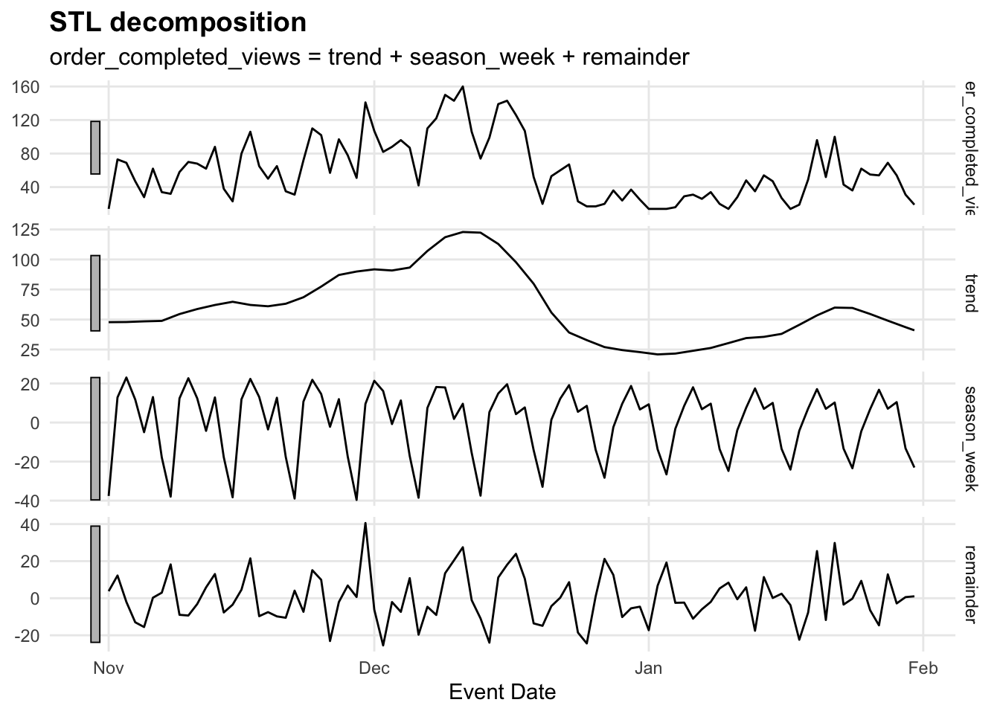
Scanning the components outputted by the decomposition, a few conclusions were drawn. Looking at the trend component, it seems a steady upward trend takes place from the start to the middle of the series. Then, a sharp negative trend followed by a slight increase towards the tail end of the series is present. Indeed, this might be additional seasonality that might become more apparent if additional data were available.
The seasonal component is also interesting here, as some type of cyclic weekly pattern seems to be present. This includes less traffic around the beginning of the week and weekends, where the majority of this cyclic pattern occurs during the week. It’s also interesting to note a consistent drop occured on most Thursdays of the week.
Wrap up and final thoughts
The exploratory analysis is now complete, and this will be the conclusion of this post within the series. This post first started with exporting Google Analytics 4 data and wrangling it into a state suitable for exploratory analysis. Then, several iterations of narrowing the analysis’ scope were performed. Future posts will aim to utilize findings from this exploratory analysis to develop a model forecasting order completed page views.
This exploratory analysis was not without its limitations. There were data issues that may have limited my ability to create an exploratory analysis that identified all the important characteristics within the data (i.e., only having access to ~4 months worth of data) and the process under study. Simply put, access to data from multiple years would have been ideal.
Drafting this post has been an interesting, challenging attempt to practice the exploratory analysis steps involved when beginning the process of creating forecasts of time series data. It also was an attempt to better hone the skills needed to make interpretations from the output from the exploratory analysis of real world time series data. At the very least, it helped me better organize what I’ve learned into a more structured framework. Indeed, I may have missed a few key, important details working through this process, or I may have missed some important characteristic within the data. I’m still learning and practicing the process involved with this type of analysis. Nevertheless, this post was intended to document what I have learned about the exploratory analysis of times series data thus far. My hope is others will find this post to be a good, supplementary resource to enhance their learning about the subject. If I missed anything or if I made any errors, I would appreciate the feedback.
References
Hyndman, R. J., and G. Athanasopoulos. 2021. Forecasting: Principles and Practice (3rd Ed). OTexts: Melbourne, Australia. https://Otexts.com/fpp3/.